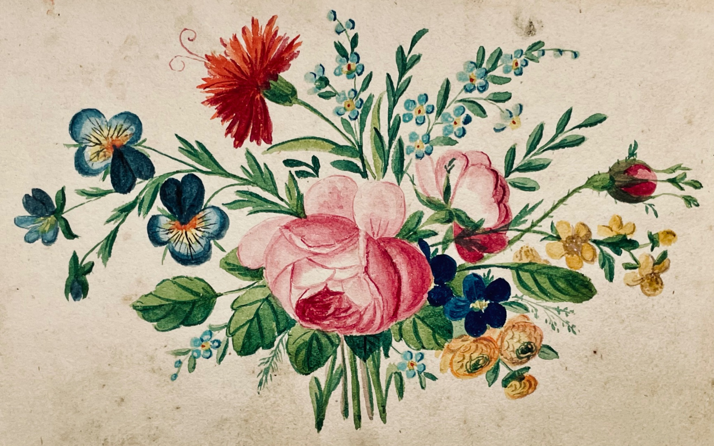

Willkommen
Wir veröffentlichen Bücher, Hefte und andere Materialien zur Geschichte, Kultur und regionalen Erinnerung, insbesondere zu Maxen und seiner Umgebung.
Unsere Publikationen
Über den Verlag
Erfahren Sie mehr über die Geschichte und die Arbeit unseres Verlags. Weiterlesen
Kontakt
Informationen zu Bestellungen und die Kontaktdaten finden Sie unter Kontakt & Impressum.